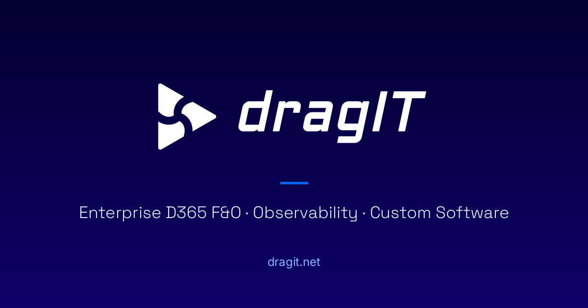

Kredencijali
Akademska osnova, pristup isporuci
Akademska osnova, pristup isporuci
PhD — poslovna informatika, Univerzitet u Novom Sadu, Ekonomski fakultet. Disertacija: Model agilne arhitekture za razvoj poslovnog softvera zasnovan na servisnoj orijentaciji i mikroservisima.
MSc i BSc
MSc i BSc
Master informacionih nauka (UNS, Ekonomski fakultet u Subotici); diplomirani inženjer računarstva i informatike (ETF, Univerzitet u Beogradu).
Microsoft Certified
Microsoft Certified: Dynamics 365 Fundamentals (ERP).
Objavljeni istraživač
Recenzirani radovi o agilnoj arhitekturi softvera, SOA i digitalnoj transformaciji u proizvodnji.
Put
25+ godina, jedna nit
Inženjer softvera → grupni CIO → upravni odbor → nezavisna praksa. Svaka uloga je držala isti fokus: sistemi koje proizvodnja stvarno vozi.
- Mission Control — nadzor za D365 F&O kod Ragn-Sells: 5 nadzornih tabli nad 20+ eksternih integracija na Azure Log Analytics (ADX/KQL), pa klijent vidi kvarove batch-a i integracija pre nego što ih vide njegovi korisnici.
- Portal AM — hibridna platforma za ArcelorMittal, 70+ korisnika, isporučeno do 25% iznad očekivanja samog klijenta. Proizvodni pod na njoj radi svakodnevno.
- Funkcionalni i tehnički vodiči za D365 F&O (SCM) sa Daxact-om i vodiči za module AGP, ITS, CRM, FIN/ACC, WMS — još u upotrebi za onboard.
- Vodio strategiju i isporuku za 38% rasta prihoda u grupi.
- Portal Boksit u produkciji sa 300+ korisnika; spoljni ISO auditor: "Impresioniran sam. Ovakvo se viđa retko."
- 95%+ IT resursa prebačeno na open source — oko 30.000 EUR uštede u licencama; 13 km optičke mreže, 300+ hostova; sertifikacije ISO 9001 / HACCP / FSC.
- Prvi web-bazirani ERP za osiguranje u Srbiji (2009, prema dostupnim evidencijama); dvogodišnja velika tranzicija sa 20–30% na punu funkcionalnu pokrivenost.
- Analitika rizika na 75K+ polisa — Kohonenova SOM mreža i fuzzy clustering za klasifikaciju rizika vozila i prognozu MTPL.
- Projektirao nacionalni pilot finansijskog ERP-a za Ministarstvo finansija Srbije.
- Softver za sigurnosne sisteme: kontrola pristupa i evidencija radnog vremena za Telekom Srbiju; međunarodna nabavka ICT bezbednosnih sistema.
- Marketing: 2 prezentacije na Beogradskom sajmu; preprodaja kroz Zapadni Balkan.
- Interni poslovni softver: upravljanje internim papirima i nabavkom zaliha za početne akcionare Boksita.
- ICT podrška upravi, marketingu, finansijama i operacijama; prenos znanja i obuka zaposlenih.
Objavljeni radovi
Istraživanja koja se koriste u praksi
- PhD (2020) — Model of an agile architecture for the development of business software based on service orientation and microservices — doktorska disertacija, poslovna informatika, Ekonomski fakultet u Subotici; mentor: prof. dr Saša Bošnjak.
- MSc (2010) — Implementation of SOA using .NET and AJAX technologies — master rad, Ekonomski fakultet u Subotici; mentor: prof. dr Saša Bošnjak.
- 66 citata · 3.904 čitanja · 7 publikacija — profil na ResearchGate; Google Scholar navlja 82 citata (h-indeks 3) — dva indeksa imaju različite korene citiranja.
Radite sa arhitektom, ne sa slojem
30 minuta. Bez pripreme. donesite svoje okruženje i reću vam gde su slepe tačke — i šta bih ja s tim uradio.
Izaberite vreme koje vam odgovara
Kalendar za zakazivanje je sa Calendly-a. Učitavanje vas povezuje sa calendly.com i može postaviti Calendly kolačiće — vidite Calendly-jevu obaveštenje o privatnosti.
Više volite mejl? Ili ako Calendly ne radi: